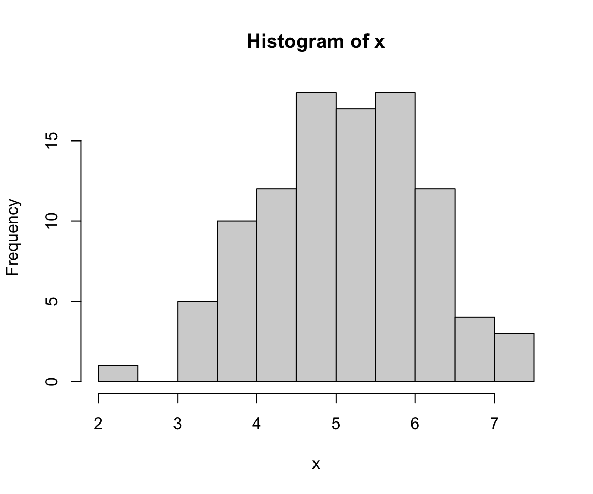
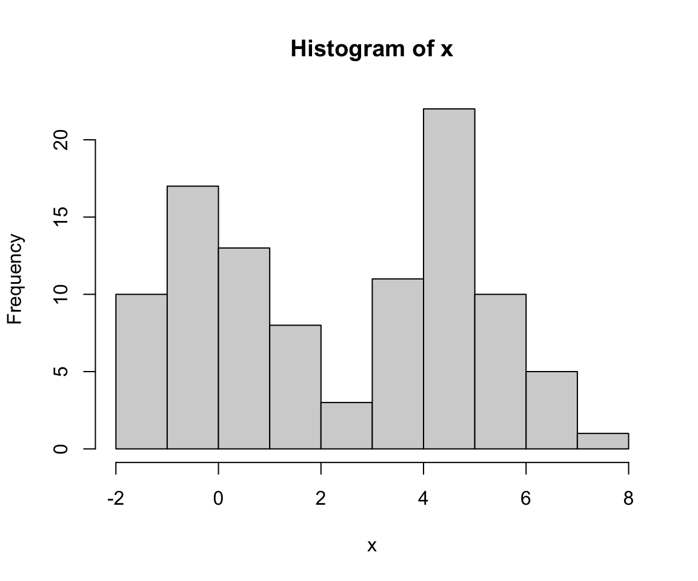
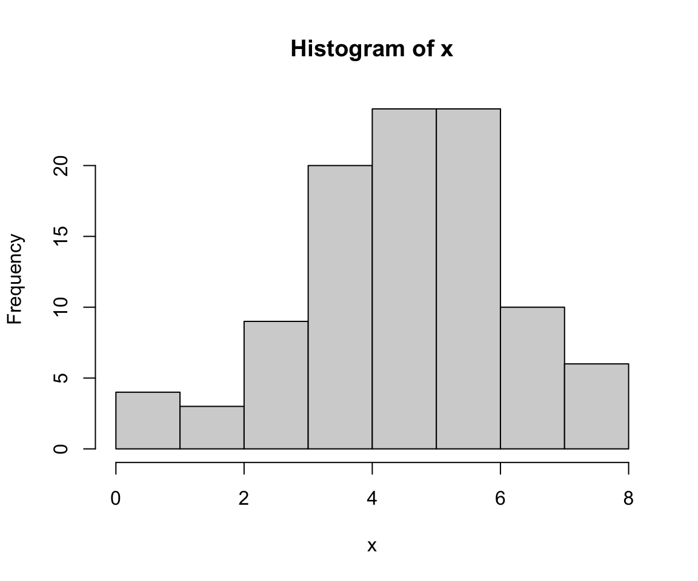
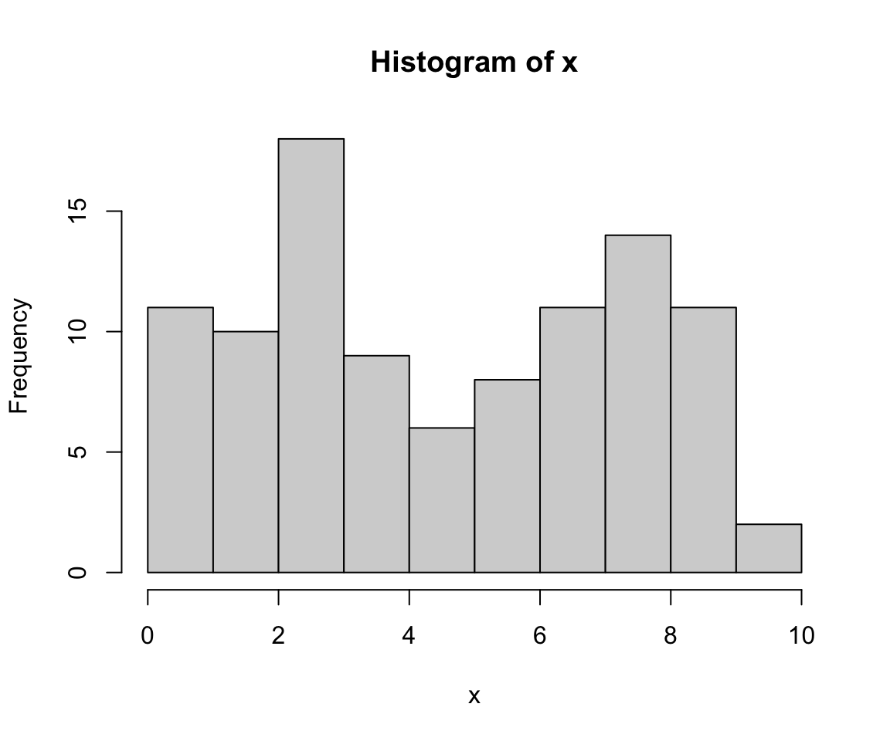
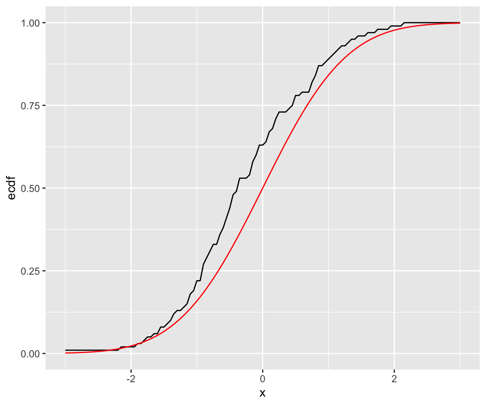

library(tidyverse)
library(HDSinRdata)
data(NHANESsample)10 Probability Distributions in R
In this chapter, we cover how to generate random samples in R from known probability distributions and empirical distributions. Base R provides a set of four functions for all common probability distributions. These can be used to generate random samples and to calculate the corresponding density, quantile, and cumulative functions that correspond to that distribution.
In the following code, we demonstrate an example of drawing random samples. Anytime we perform an operation in R in which the outcome has some randomness, we are using R’s random number generator under the hood. This means that the results change every time we run our code. In order to make sure our code is replicable, we have to set a random seed, which makes the results the same every time. The set.seed() function takes in a numeric seed value. You can use any number as the seed. In the next code chunk, we first sample a random value from the numbers 1 to 10 without setting a seed. Note that every time you run this code chunk, the output can change. However, in the following code chunk we set a seed, which means that the result is always the same (in this case, it’s equal to 2).
sample(1:10, 1)
#> [1] 3set.seed(5)
sample(1:10, 1)
#> [1] 210.1 Probability Distributions in R
All of the common discrete (e.g. Bernoulli, binomial) and continuous (e.g. normal, uniform, exponential, Poisson) probability distributions have corresponding functions in R. For each of these distributions, there are four available functions:
r[dist](): generates random samples from the given distribution (e.g.rnorm(),runif())
d[dist](): density function for the distribution (e.g.dnorm(),dunif())
p[dist](): cumulative distribution function for the distribution (e.g.pnorm(),punif())
q[dist](): quantile function for the distribution (e.g.qnorm(),qunif())
Let’s see how these work in practice, using the normal and binomial distributions as examples.
10.1.1 Random Samples
The following code generates a sample of 100 random numbers following a normal distribution with mean 5 and standard deviation 1. As you can see, the function takes in n (the number of observations), mean (the mean with default value 0), and sd (the standard deviation with default value 1). A histogram plot (using the built-in hist() function) shows that the generated values look roughly normally distributed.
x <- rnorm(n = 100, mean = 5, sd = 1)
hist(x)
We can also input a vector instead of a single value for the mean or sd arguments if we want each sample to come from its own normal distribution. As an example, we generate 100 random numbers with the default standard deviation of 1 where half of the samples have a mean of 0 and the other half have a mean of 5.
x <- rnorm(n = 100, mean = rep(c(0,5), 50))
hist(x)
For the binomial distribution, the difference is that we need to specify a probability p and number of trials size (rather than mean and sd in the normal case) to specify the distribution. In the following code, we generate 100 random numbers following a binomial distribution with 10 trials and a probability 0.5.
x <- rbinom(n = 100, p = 0.5, size = 10)
hist(x)
We can also specify a different size or probability of success for each sample. We repeat our sample but this time let the probability of success be 0.25 for half of the sample and 0.75 for the other half.
x <- rbinom(n = 100, p = rep(c(0.25, 0.75), 50), size = 10)
hist(x)
10.1.2 Density Function
Next, we look at the density function. Recall that the probability density function for a normal distribution with mean \(\mu\) and standard deviation \(\sigma\) is given by the following formula.
\[ f_X(x) = \frac{1}{\sigma \sqrt{2 \pi}} \exp \left(-\frac{1}{2} \left (\frac{x-\mu}{\sigma} \right)^2 \right) \]
Using the following code, we can compare some of the values from the dnorm() function to this equation and see that they are in fact equal. We could also specify the mean and standard deviation in this function but choose to use the default values (mean = 0 and sd = 1).
dnorm(0) == 1/sqrt(2*pi)
#> [1] TRUE
dnorm(1) == exp(-1/2)/sqrt(2*pi)
#> [1] TRUE
dnorm(2) == exp(-1/2*2^2)/sqrt(2*pi)
#> [1] TRUEIf we wanted to find the density function for several values, we can input a vector to this density function. In the following code, we find the values of the density function for a normal distribution with mean 1 and standard deviation 2 for values c(-1, 0, 1, 2, 3).
dnorm(c(-1, 0, 1, 2, 3), mean = 1, sd = 2)
#> [1] 0.121 0.176 0.199 0.176 0.121For the binomial distribution, dbinom() returns the probability of a certain number of successes and corresponds to the probability density function.
\[ P(X = x) = \binom{size}{x} p^x (1-p)^{size-x}. \]
For example, we can find the probability of getting exactly 3 heads from 10 coin flips, each with a probability of 0.5 for heads.
dbinom(3, size = 10, p = 0.5)
#> [1] 0.117While dnorm() allows us to specify any continuous values for \(x\), dbinom() gives us a warning if x contains non-integer values since the support of a binomial variable only includes integers.
dbinom(2.4, size = 10, p = 0.5)
#> Warning in dbinom(2.4, size = 10, p = 0.5): non-integer x = 2.400000
#> [1] 0We can also specify a vector for a distribution’s parameters to find the distribution function for different distributions. For example, I find the the probability density function for \(X=4\) for the distribution with \(p=0.25\) and \(p=0.5\).
dbinom(4, size = 10, p = c(0.25, 0.5))
#> [1] 0.146 0.20510.1.3 Cumulative Distribution
Next, we take a look at the cumulative distribution function. For the normal distribution, the cumulative distribution is given by pnorm(), which takes in a value x, a mean, and a sd and returns the probability that a random variable following a \(N(mean, sd)\) distribution is less than x. For example, for x equal to the mean, this returns a 50% probability because the normal distribution is symmetric with mean equal to the median. In the following code, we verify this for two different values of the mean.
pnorm(0)
#> [1] 0.5
pnorm(5, mean = 5, sd = 1)
#> [1] 0.5Since the binomial distribution is discrete, it can only take on integer values from 0 to size. This means that, for example, the pbinom() function returns the same value for 3, 3.5, 3.6, all the way up to, but not including, 4 - this is because \(P(X \leq 3) = P(X \leq 3.2) = P(X \leq 3.5) = P(X \leq 3.6)\) and so on. Note that here we passed in a vector of values x.
pbinom(c(3, 3.5, 3.6, 4), size = 10, p = 0.5)
#> [1] 0.172 0.172 0.172 0.377We can also vary the parameters for the distribution by passing a vector for size and/or p to the cumulative distribution function. In the subsequent code chunk, we find the probability that \(X \leq 3\) and the probability that \(X \leq 4\) with 12 trials and a probability 0.25 and with 10 trials and a probability 0.5.
pbinom(c(3, 3, 4, 4), size = c(12, 10, 12, 10),
p=c(0.25, 0.5, 0.25, 0.5))
#> [1] 0.649 0.172 0.842 0.37710.1.4 Quantile Distribution
Lastly, we have the quantile distribution function, which is the inverse of the cumulative distribution function. This function takes in a probability x, a mean, and a sd and returns the value for which the cumulative distribution function is equal to x. Thus, when x is equal to 0.5, the qnorm() function returns the median of the distribution, which is equal to the mean for the normal distribution.
qnorm(0.5)
#> [1] 0
qnorm(0.5, mean = 5, sd = 1)
#> [1] 5For the discrete binomial distribution, the qbinom() function returns the largest integer value for which the probability of being less than or equal to that value is at most the inputted value x.
qbinom(c(0.2, 0.3), size = 10, p = 0.5)
#> [1] 2 310.1.5 Reference List for Probability Distributions
In the previous examples, we only used the normal and binomial distributions. The following list contains the other probability distributions available in R. For each distribution, we have given the arguments for the r[dist]() function. The other three functions have a similar format. Unless otherwise stated, the parameter n is the number of observations.
- Beta:
rbeta(n, shape1, shape2, ncp = 0)with shape parametersshape1andshape2(and optional non-centrality parameterncp). - Binomial:
rbinom(n, size, prob)with probability of successproband number of trialssize - Cauchy:
rcauchy(n, location = 0, scale = 1)with location parameterlocationand scale parameterscale. - Chi-Square:
rchisq(n, df, ncp = 0)withdfdegrees of freedom and optional non-centrality parameterncp. - Exponential:
rexp(n, rate = 1)with raterate(i.e., mean = 1/rate). - F:
rf(n, df1, df2, ncp)withdf1anddf2degrees of freedom (and optional non-centrality parameterncp). - Gamma:
rgamma(n, shape, rate = 1, scale = 1/rate)with parametersshapeandscale(or alternatively specified byrate). - Geometric:
rgeom(n, prob)with probability parameterprob. - Hypergeometric:
rhyper(nn, m, n, k)withmwhite balls,nblack balls, andkballs chosen. - Logistic:
rlogis(n, location = 0, scale = 1)with parameterslocationandscale. - Log Normal:
rlnorm(n, meanlog = 0, sdlog = 1)with meanmeanlogand standard deviationsdlogon the log scale. - Negative Binomial:
rnbinom(n, size, prob, mu)with parameterssizeandprob. - Normal:
rnorm(n, mean = 0, sd = 1)with mean equal tomeanand standard deviation equal tosd. - Poisson:
rpois(n, lambda)with parameterlambda. - Student t:
rt(n, df, ncp)withdfdegrees of freedom (and optional non-centrality parameterncp). - Uniform:
runif(n, min = 0, max = 1)with minimum valueminand maximum valuemax. - Weibull:
rweibull(n, shape, scale = 1)with parametersshapeandscale. - Wilcoxon Rank Sum:
rwilcox(nn, m, n)withnnnumber of observations and sample sizesmandn. - Wilcoxon Signed Rank:
rsignrank(nn, n)withnnnumber of observations and sample sizen.
10.1.6 Practice Question
Set the random seed to be 123, and then generate 5 random numbers following a uniform distribution with min 1 and max 5. Then, find the 0.15 quantile for this same distribution (it should be equal to 1.6).
# Insert your solution here:10.2 Empirical Distributions and Sampling Data
At the start of this chapter, we used the sample() function. This function can also be used to sample from an empirical distribution. The sample(x, size, replace=FALSE, prob=NULL) function takes in the values we want to sample from x, the number of observations we want to sample size, and whether we want to sample with replacement replace. If we don’t want to sample such that each value has an equal probability of being chosen, we can also set a probability vector prob, which must have the same length as x. In the following code, we sample 500 rows without replacement from the NHANESsample data. To do so, we select 500 values from the indices 1 to the number of rows in the data. We then select rows of the data using these indices.
nhanes_sample_ids <- sample(1:nrow(NHANESsample), 500, replace = FALSE)
nhanes_sample <- NHANESsample[nhanes_sample_ids, ]
dim(nhanes_sample)
#> [1] 500 21We now demonstrate sampling with replacement. By doing so, we create a new data set that is sampled from the empirical distribution of the data and that is called a bootstrap sample.
nhanes_sample_ids <- sample(1:nrow(NHANESsample), nrow(NHANESsample),
replace = TRUE)
nhanes_sample <- NHANESsample[nhanes_sample_ids, ]
dim(nhanes_sample)
#> [1] 31265 21Another way to sample from a data frame is to use the slice_sample() function from the tidyverse. In this function, we can either specify the number of observations to sample n or the proportion of observations to sample prop. Additionally, we can sample with or without replacement by setting the value of the argument replace (with default value FALSE). We use this function to randomly sample 20% of observations without replacement.
nhanes_sample <- NHANESsample %>%
slice_sample(prop = 0.2, replace = FALSE)
dim(nhanes_sample)
#> [1] 6253 2110.2.1 Practice Question
Set the random seed to 5 and then sample 50 observations with replacement from the set of integers from 1 to 100. Take the mean of those observations - it should be 56.7.
# Insert your solution here:Beyond sampling, we can also find the empirical cumulative distribution. That is, we can use a given vector to infer a distribution. In the following case, we draw a random sample from a normal distribution vec and then find its empirical cumulative distribution using the ecdf() function. This function actually returns a function, which can then be used to find the sample cumulative distribution for different values similar to the p[dist]() functions. In our example, we find the sample probability that \(X \leq 0\).
vec <- rnorm(100)
ecdf_vec <- ecdf(vec)
ecdf_vec(0)
#> [1] 0.63We now plot this empirical distribution against the actual cdf using the pnorm() function. Note that in order to do so, we create a sequence of possible x values to pass to both pnorm() and ecdf_vec().
df <- data.frame(x = seq(-3, 3, 0.05))
df$ecdf <- ecdf_vec(df$x)
df$distn = pnorm(df$x)
ggplot(df) +
geom_line(aes(x = x, y = ecdf), color = "black") +
geom_line(aes(x = x, y= distn), color = "red") 
In practice, the empirical cumulative distribution might involve data from a given data set that you want to use to represent the population’s distribution. As an example, in the following code we find the empirical distribution of blood lead level from the NHANESsample data frame. A blood lead level of 5 µg/dL or above is considered elevated. We can see 96.4% of observations have a blood lead level below this threshold.
ecdf_lead <- ecdf(nhanes_sample$LEAD)
ecdf_lead(5)
#> [1] 0.96110.3 Recap Video
10.4 Exercises
Assume the distribution of female heights is approximated by a normal distribution with a mean of 64 inches and a standard deviation of 2.2 inches. Using this distribution, answer the following questions.
What is the probability that a randomly chosen female is 5 feet or shorter?
What is the probability that a randomly chosen female is 6 feet or taller?
Generate 500 random observations following this distribution and find the sample 0.15 quantile. Then, compare this to the 0.15 quantile using the
qdist()function.
Compute the probability that the height of a randomly chosen female is within 1 SD from the average height.
Create a vector of 100 patient IDs, and then use the
sample()function to assign half of them to a treatment group and the other half to a control group. Then, suppose those in the control group have a reduction in viral load distributed as \(X \sim 100*exp(mean = V)\), where \(V\) follows a uniform distribution between 1 and 2, whereas those who are in the treatment group have a reduction in viral load distributed as \(X \sim 100*exp(mean = 3)\). Plot distributions of reduction in viral load for both groups.